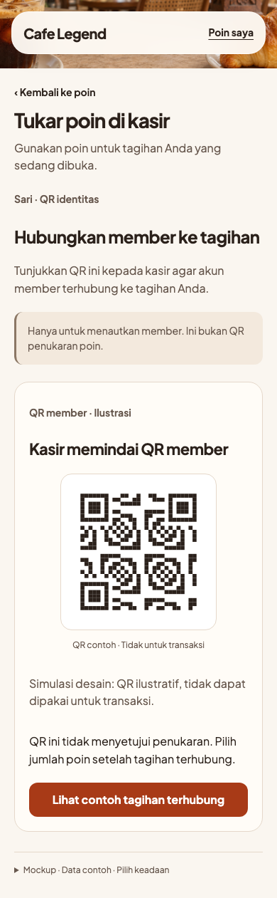
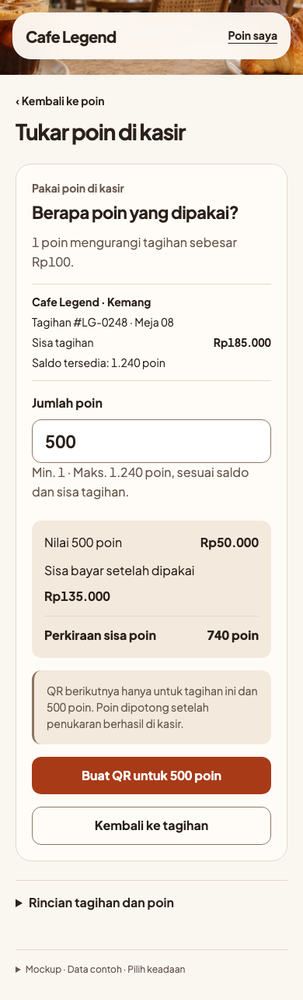
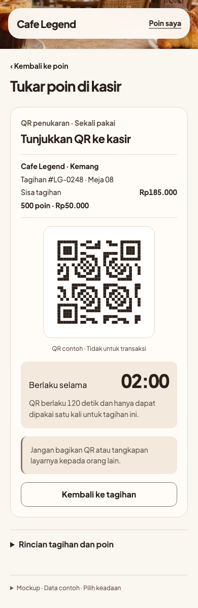
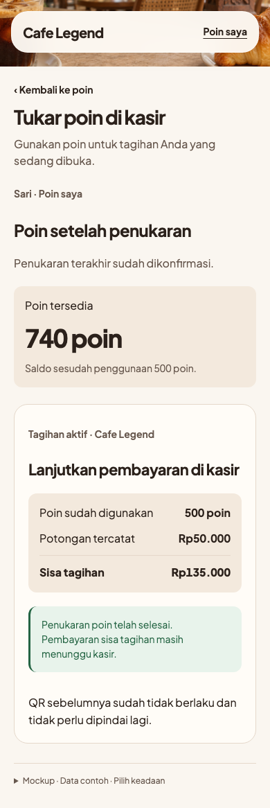
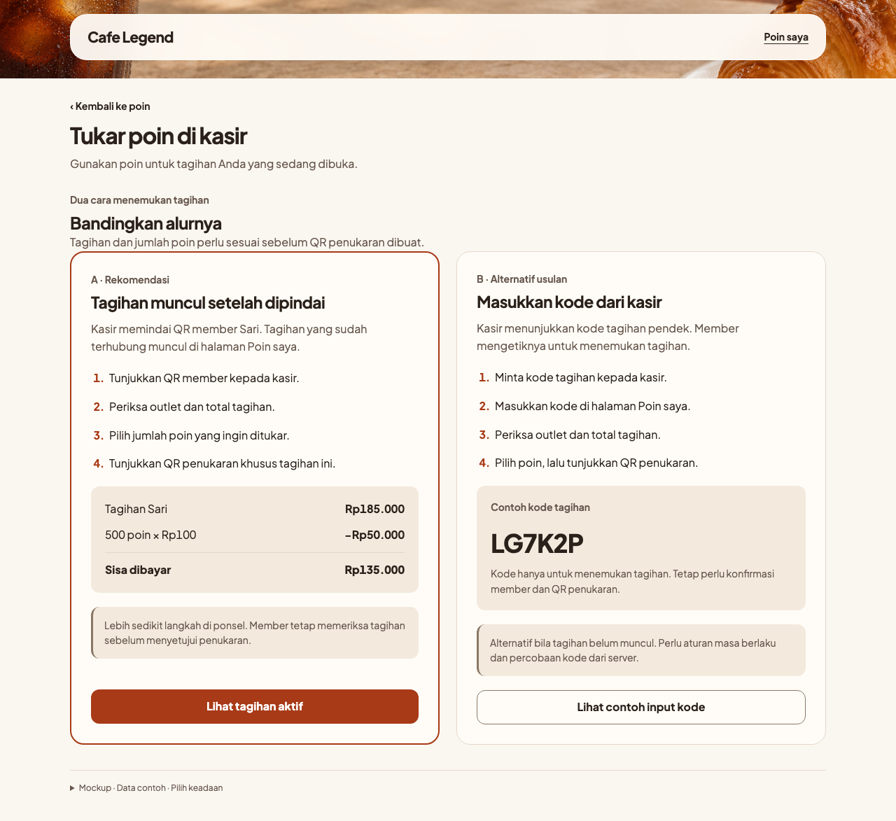
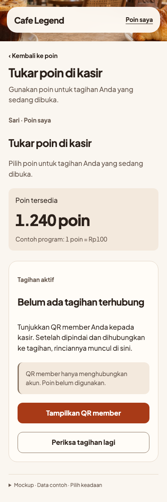
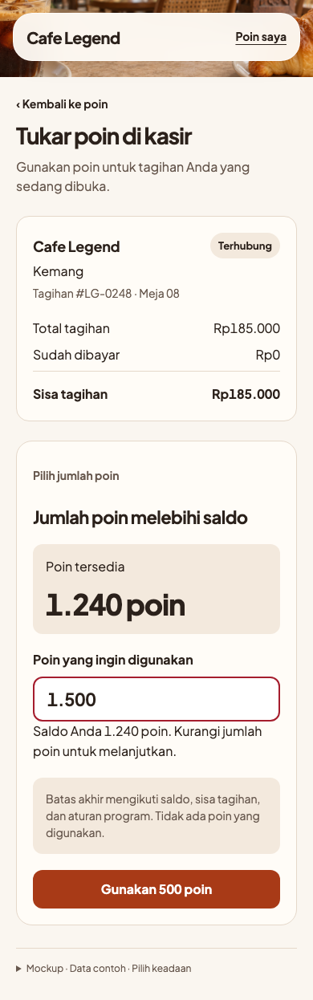
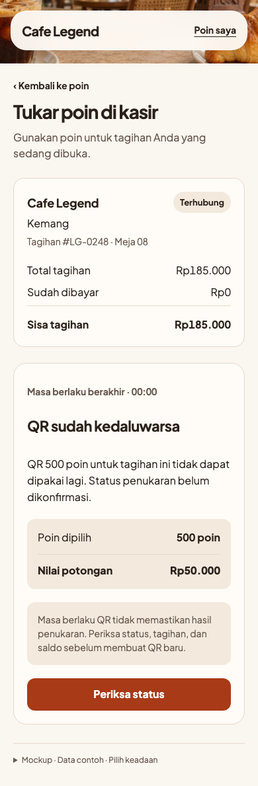
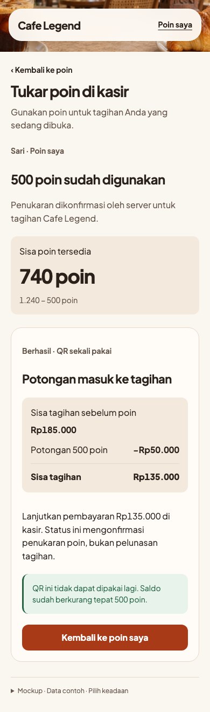
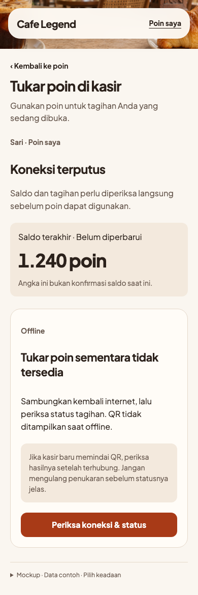

Server mewajibkan QR khusus untuk tagihan dan jumlah poin yang sama. Dua cara member mendapat tagihannya:
A (rekomendasi): kasir memindai QR member, lalu tagihan aktif muncul sendiri di HP member. Member pilih poin, muncul QR khusus 120 detik.
B: kasir menyebut kode tagihan pendek, member mengetiknya di HP.









